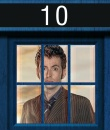
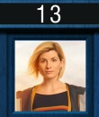
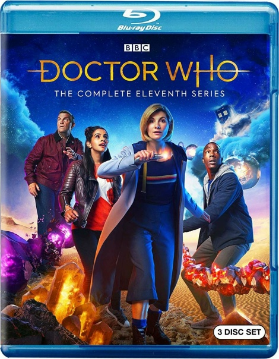
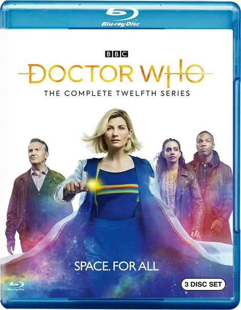
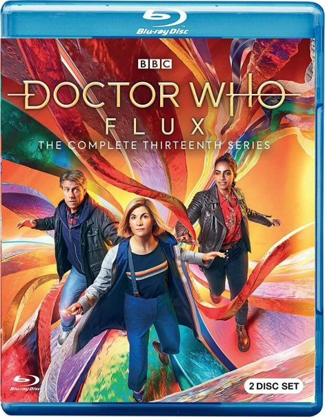

Таблица коллекции |  Навигация по канону |  Связные экранизации |
Таблица коллекции | Навигация по канону | Связные экранизации |








Эра Тринадцатого Доктора
Актёр: Джоди Уиттакер

С дебютом Джоди Уиттакер в роли Тринадцатого Доктора сериал делает ставку на эмпатию, командность и приземлённую человечность — Доктор ещё не до конца освоилась после регенерации и действует по наитию, а её спутники (Грэм, Райан, Яс) становятся полноценной командой, где каждый привносит свой взгляд. Сезон сознательно уходит от «таймеров до катастрофы» в сторону историй с социальным подтекстом — от борьбы за гражданские права до критики корпораций, — и при этом сохраняет дух приключений, балансируя между масштабными угрозами и личными драмами героев.
Наш плейлист сезона в ВК

На первый план выходит тайна происхождения Доктора, а возвращение Мастера в исполнении Саши Дхавана придаёт истории личную, почти трагическую напряжённость. Исторические эпизоды соседствуют с жёсткими футуристическими конфликтами, а финал «Вечные дети» переворачивает устоявшуюся мифологию, ставя под вопрос саму суть Повелителей времени — при этом Тринадцатый Доктор остаётся опорой для команды, пытаясь удержать баланс между раскрытием правды и защитой близких.

Это единая масштабная арка, где сама ткань пространства и времени рушится под натиском загадочной силы: Поток стирает целые миры, а Доктор вместе с командой отчаянно ищет способ его остановить. В центре — противостояние с Дивизией, Роем и Лазурью, возвращение знакомых врагов и попытки удержать рассыпающуюся вселенную, при этом Тринадцатый Доктор балансирует между отчаянной решимостью и болью от неизбежных потерь, а рваный, клиповый ритм подчёркивает ощущение надвигающегося конца.